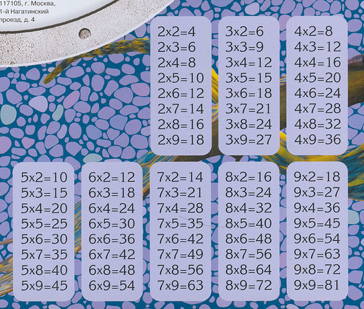
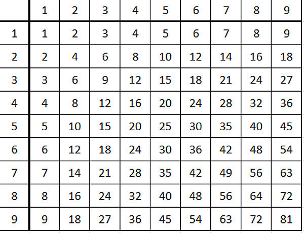
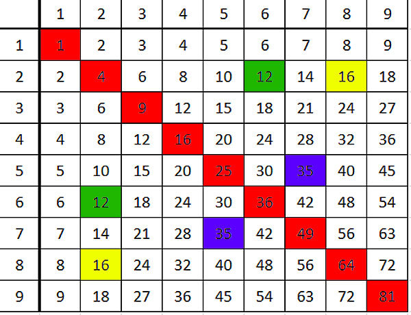
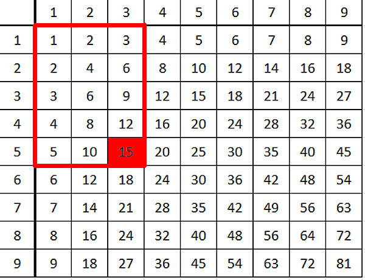
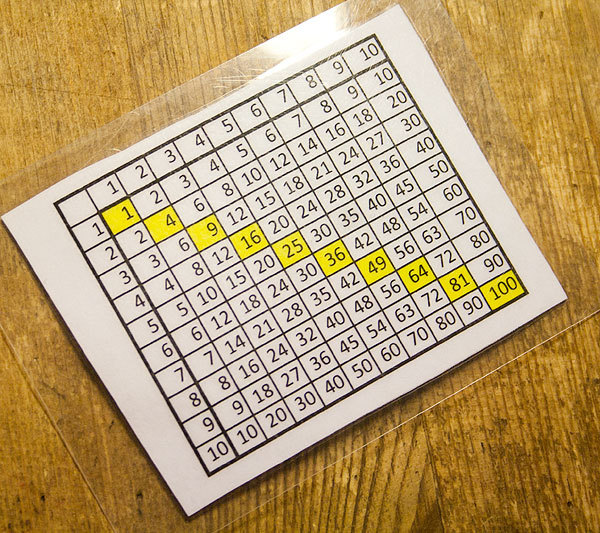

Как научить школьников умножению? Математик Екатерина Кукина рассказывает о превосходстве таблицы умножения Пифагора, где строки и столбцы озаглавлены множителями, а в ячейках находится их произведение, над знакомым всем примерами «в столбик» на обороте рабочей тетради.
Я преподаю математику. А еще вы не раз слышали мнение, что уровень математического образования падает.
Вот, когда мои дети учились во втором классе, я отчетливо себе поняла, почему падает уровень математического образования в школе. Именно во втором классе при закладке самого фундамента математического образования возникает такая гигантская невосполнимая дыра, которую уже никакими костылями в виде калькуляторов не подопрешь.
А именно, главная проблема -- в таблице умножения. Посмотрите на тетради в клетку, которые есть у ваших детей-школьников.
Я долго-долго ходила по магазинам в поисках тетрадей. И все равно, на всех -- вот такая картина.

Есть тетради еще хуже (для старшеклассников) на которых таблицы умножения нет, а есть куча бессмысленных формул.
Ну, так чем же эта тетрадь плоха? Ничего не подозревающий родитель видит, что на тетради таблица умножения. Вроде, всю жизнь же на тетрадях была таблица умножения? Что не так-то? А проблема как раз в том, что на тетради НЕ таблица умножения.
Таблица умножения, дорогие мои читатели, это вот:

Иногда эту же таблицу даже называют красивым слово "таблица Пифагора". Верхнюю и левую колонки можно не брать, только основной прямоугольник.
Во-первых, это таблица. Во-вторых, она интересная! Ни один ребенок в здравом уме не будет рассматривать выписанные столбиками примеры. Ни один ребенок, как бы гениален он ни был, не сможет найти в выписанных примерах интересные фишки и закономерности.
Ну, и вообще, когда учитель говорит: "выучи таблицу умножения", а ребенок даже перед собой таблицы не видит -- он сразу понимает, что математика -- это такая наука, где обычные вещи названы как-то по-другому и надо много-много зубрить, а понять ничего невозможно. И вообще, надо делать "так, как сказано", а не "так, как есть смысл".
Чем же "таблица" лучше?
Во-первых, в ней нет мусора и информационного шума в виде левой части примеров.
Во-вторых, над ней можно подумать. Тут даже нигде не написано, что это умножение -- просто таблица.
В-третьих, если она постоянно под рукой и ребенок на нее постоянно натыкается, он волей-неволей начинает запоминать эти числа. В частности, на вопрос "семью восемь" он никогда не ответит 55 -- ведь числа 55 вообще в таблице нет и не было!
Запоминать столбики примеров способны только дети с аномальной памятью. В "таблице" надо запоминать гораздо меньше.
Кроме того, ребенок автоматом ищет закономерности. И сам самостоятельно их находит. Даже такие закономерности находят дети, еще не умеющие умножать. Например: числа, симметричные относительно диагонали -- равны. Понимаете, людской мозг просто настроен искать симметрию, и если ее находит и замечает -- очень радуется. А что это означает? Это означает, что от перестановки мест сомножителей произведение не меняется (или что умножение коммутативно, говоря проще).

Понимаете, ребенок замечает это сам! А то, что человек придумал сам, он запомнит навсегда, в отличие от того, что он зазубрил или ему сказали.
Помните свой экзамен в вузе по математике? Вы же забыли все теоремы курса, кроме той, что вам досталась, и вам пришлось ее доказывать злобному преподу! Ну, это если вы не списывали, конечно. (Я утрирую, но почти всегда это близко к правде).
А потом ребенок видит, что можно не всю таблицу учить, а только половину. Если мы уже знаем строчку умножения на 3, то нам не надо запоминать "восемь на три", а достаточно вспомнить "три на восемь". Уже вдвое меньше работы.
А кроме того, очень важно, что ваш мозг не принимает сухую информацию в виде каких-то непонятных столбиков примеров, а думает и анализирует. Т.е. тренируется.
Кроме коммутативности умножения можно заметить, например, еще такой замечательный факт. Если ткнуть в любое число и провести прямоугольник от начала таблицы до этого числа, то количество клеточек в прямоугольнике -- ваше число.

И тут умножение уже получает более глубинный смысл, чем просто сокращенная запись нескольких одинаковых слагаемых. Идет смысл и для геометрии -- площадь прямоугольника равна произведению его сторон )
А вы не представляете, насколько проще делить с такой таблицей!!!
Короче, если ваш ребенок во втором классе, распечатайте ему вот такую, правильную, таблицу умножения. Повесьте на стену большую, чтобы он на нее поглядывал, когда делает уроки или сидит за компом. Или еще какой дурью страдает. И напечатайте и заламинируйте ему маленькую (или напишите на картоне). Пусть он ее в школу с собой таскает, и просто удобно под рукой держит. (не помешает на такой таблице выделить квадраты по диагонали, чтобы лучше видно)
У моих детей есть -- вот такая. И им это реально помогло во втором классе и до сих пор очень сильно помогает на уроках математики.

Вот, честное слово, сразу средний балл по математике увеличится, а ребенок перестанет ныть, что математика тупая. А в придачу, в будущем вашему ребенку тоже будет проще. Он поймет, что надо шевелить мозгами, а не зубрить. И мало, что поймет, он еще и научится это делать.
И повторюсь: в примерах столбиками ничего плохого нет. И количество информации в них содержится такое же, как и в "таблице". Но и ничего хорошего в таких примерах тоже нет. Это -- информационный мусор, из которого нужное еще не враз найдешь.